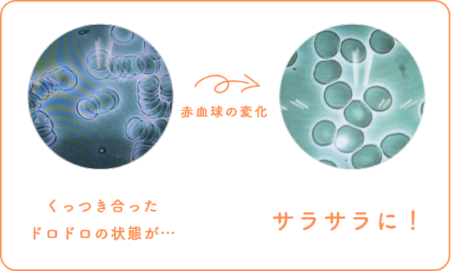
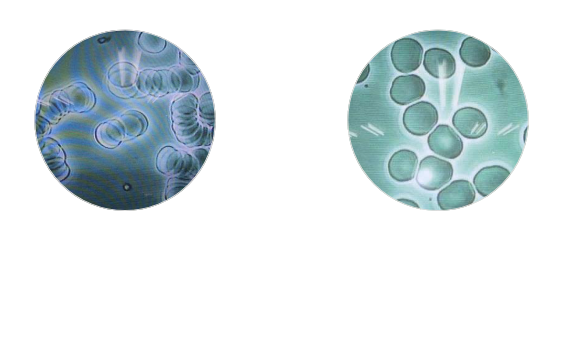

ウェルネスレンズで
代謝アップ！素顔に自信！
レンズでこっそり
エイジングケア
しちゃってます！
「活性酸素」が肌のシミ、しわの原因に
ご存知ですか?
私たちの体にとって必要不可欠な酸素。体内に取り入れた酸素のうち約2%が強い酸化力を持つ「活性酸素」に変わると言われています。
「活性酸素」により起こる「酸化」
りんごをカットしたあとに時間が経つと切り口が茶色くなったり、鉄が錆びる「酸化」。これと同様に、私たちの身体も活性酸素により酸化します。
活性酸素は年齢ともに増え、さまざまな老化現象をもたらします。

身体が酸化する・錆びることが老化だと言われています。
抗酸化溶液を
メガネレンズにコーティング

ウェルネスレンズ
普通のメガネと同じように掛けるだけで抗酸化溶液の作用を得られます。体内の活性酸素が減少することで、体内の血流が良くなりきれいな酸素が行き渡るようになります。
シミ・くすみ、シワ・たるみなど、お肌への影響
活性酸素は、紫外線を浴びることで大量に生成され身体が酸化します。紫外線から身体を守るためメラニンが生成されますが、多すぎるとシミやくすみの原因となります。また、活性酸素は肌のコラーゲンやエラスチンにもダメージを与えるため、増えると潤いやハリ、弾力性が衰えて、たるみやシワができやすくなります。
髪への影響
活性酸素が増えると、髪の黒い成分の元となる「メラノサイト」を攻撃します。 するとメラニンがつくられなくなり、白髪になります。

血流が良くなり若々しい肌を保つ「抗酸化溶液」
身体の「酸化」を抑制するために、研究開発された特殊酵素(液体)「抗酸化溶液」。活性酸素を消去することで物質の酸化を妨げ、腐敗や雑菌の繁殖もさせません。
活性酸素が消去されると、酸化・錆によってドロドロにくっついていた血液がサラサラと身体中に流れ出します。血流が良くなりきれいな酸素が身体のすみずみにまで行き渡ると、指先がポカポカと暖かくなり肌ツヤが良くなります。また、身体本来が持っている免疫力や回復力を高めてくれます。
活性酸素消去による血液の流れ
血液の状態・血糖値・血圧などに変化を与えることが実験的に確認されています。
*日本生体医工学会(APCMBE2005) 及び電子情報通信学会より
抗酸化溶液は、さまざまな物質に配合することができ、高熱で加工する製品でもその触媒機能(還元反応)は変化せず、強力かつ⻑時間にわたり発揮し続けます。この特性を活かし、メガネレンズへのコーティングに成功、「ウェルネスレンズ」が誕生しました。
肌年齢のお悩みに
いつまでも美しく、若々しく。

1
活性酸素を消去してくれる「抗酸化溶液」がコーティングまたは配合されたレンズやメガネフレームを掛けるだけで、抗酸化パワーにより身体の血流が良くなり、お顔の色が”ぱっと明るく”なり、見た目年齢が 若々しくなります。また、お肌の新陳代謝がよくなり、お肌が生まれ変わるターンオーバーが正常に働きだします。その結果、シミやシワも目立ちにくく美しいお肌を保てます。
しつこい疲れに
毎日イキイキ！視界もすっきり！
2
抗酸化パワーで身体のすみずみにまで血液が流れ出すと、手先足先の冷えが軽減。身体の回復機能が働きやすくなり、コリ固まった筋肉もほぐされ、眼疲労や肩のコリなどたまった疲れも抜 けやすくなります。毎日のエイジングケアのためにも、お家に帰ったら、ウェルネスレンズのメガネを掛けて身体を十分にリラックスさせてください。
※ウェルネスレンズの装用により、血流が良くなることで体温が上がり、副交感神経が優位になりやすくなります。そうすると、身体がリラックスしやすくなり眠くなること があるため、お仕事中や運転中のご使用にはご注意ください。 (個人差があります。)
抗酸化溶液を
メガネレンズにコーティング
ウェルネスレンズ
普通のメガネと同じように掛けるだけで抗酸化溶液の作用を得られます。体内の活性酸素が減少することで、体内の血流が良くなりきれいな酸素が行き渡るようになります。
- お好きなフレームにウェルネスレンズを入れてメガネをお作りすることができます。
- 今お使いのフレームに、レンズだけ入れる「レンズ交換」も可能です。
- レンズは透明ですので、メイクした目元も邪魔しません。
活性酸素消去による血液の流れ
血液の状態・血糖値・血圧などに変化を与えることが実験的に確認されています。
*日本生体医工学会(APCMBE2005) 及び電子情報通信学会より
ウェルネスレンズ
薄型1.60非球面(UVカット付) 20,000円(税込/2枚1組)
超薄型1.67非球面(UVカット付) 25,000円(税込/2枚1組)
薄型1.60非球面(UVカット付) 30,000円(税込/2枚1組)
超薄型1.67非球面(UVカット付) 35,000円(税込/2枚1組)


つらい腰に、「ながら」治療。
つらい腰に、
「ながら」治療。
仕事しながら、家事しながら、休憩しながら。
コードレス&スマホ連携で、いつでもどこでも腰治療。